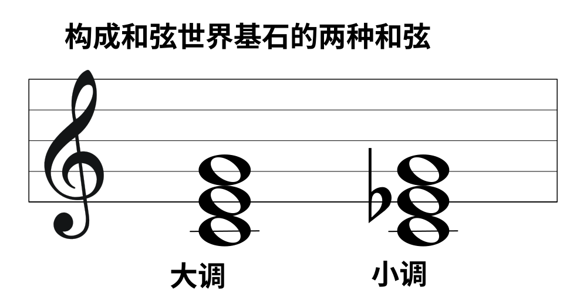

1. 心理准备
1. 心理准备
通过学习“副属和弦”与“同主音小调和弦（借用和弦）”，我们所掌握的和弦广度似乎已经大幅拓展了。

然而仔细一想，和弦最核心的和弦品质（Quality）本身，仍然只有“大和弦（Major）”与“小和弦（Minor）”。从这个角度来说，我们其实完全还没有跳出“基础中的基础”这个世界。

因此在这一章（第III章）中，我们终于要接触大和弦、小和弦之外那些别具一格的“变种和弦”了。当然，它们每一个都带有强烈的“异物感”，属于辛辣浓烈的调味品，虽然使用频率会有所下降，但作为出奇制胜的“秘密武器”，必定能极大地丰富你的音乐意境与曲想。
第III章跳着浏览也完全没问题
这第III章可以说是一条颇为艰辛的荆棘之路。因为你需要记住各种各样的和弦名称及其构成音，并一一了解其用法，是一个充斥着记忆背诵的章节。

上面是我们在第III章中将要学习的和弦精选。要把它们全部背下来确实相当吃力。因此，面对接二连三登场的和弦，哪怕你抱着“哈~ 原来还有这种和弦啊”这种轻松的态度先走马观花地看一遍，也完全没关系。

哪怕抱着“左耳进右耳出”的心态也无妨。听听示例音频，觉得“这个声音很棒！”的，就试着放到自己的曲子里用一用，在实践中一个个逐步消化吸收才是最好的办法。单纯靠死记硬背和弦名称、构成音度数以及数……其实是一种极其低效的学习方式。只有将声响、实际使用场景与和弦名称结合成一套体系来记忆，它才能成为真正属于你的知识。
2. 和弦的扩展与组合论
在列出具体的和弦名称之前，我希望大家先宏观把握一下第III章要做的整体脉络。在第II章中我们所使用的和弦类型其实非常有限，一直都在严格遵守1、3、5、7度“串丸子（三度叠置）”的规则。

因此能做出的和弦类型，无非就是三音的长短（大/小）与七音的长短（大/小）相互组合，仅仅只有4种（即使将三和弦与七和弦分开计算，也只有6种）而已。
而在第III章中，我们通过微妙地打破这种1、3、5、7串丸子的规律来创造出丰富的变体。例如把1、3、5中间的3音稍微挪动一下，变成“1、4、5”或者“1、2、5”的阵型，这就诞生了一个全新的和弦。

又或者把5度音升高或降低半音，也必定会产生极其独特的声响。

在这种情况下，是以大和弦还是小和弦为基础（即3rd是大三度还是小三度），加上5th是往上走还是往下走，彼此组合就可以创造出4种和弦。
如果将其放到七和弦中考虑，组合就更加丰富了。因为3、5、7度音各有2种变化可能，所以总共有8种形态。

你可能会惊呼“居然有8种之多吗”，但事实恰恰相反。即使遇到看似极其复杂的和弦名称，只要将其拆解成各个细小零件来看，就会发现非常简单。这就像把汉字拆解成“偏旁”和“部首/字根”来理解一样。与其盲目死记硬背，不如带着逻辑去推导记忆，效率会高得多。
因此，对于已经把大七和弦、小七和弦、属七和弦的区别牢牢印在脑海里的人来说，第III章其实并没有那么困难。因为你脑海中已经掌握了坚实的“偏旁部首”。如果在阅读过程中感到混乱，不妨先暂停一下，把时间投入到实际的作曲尝试或乐曲分析中去。